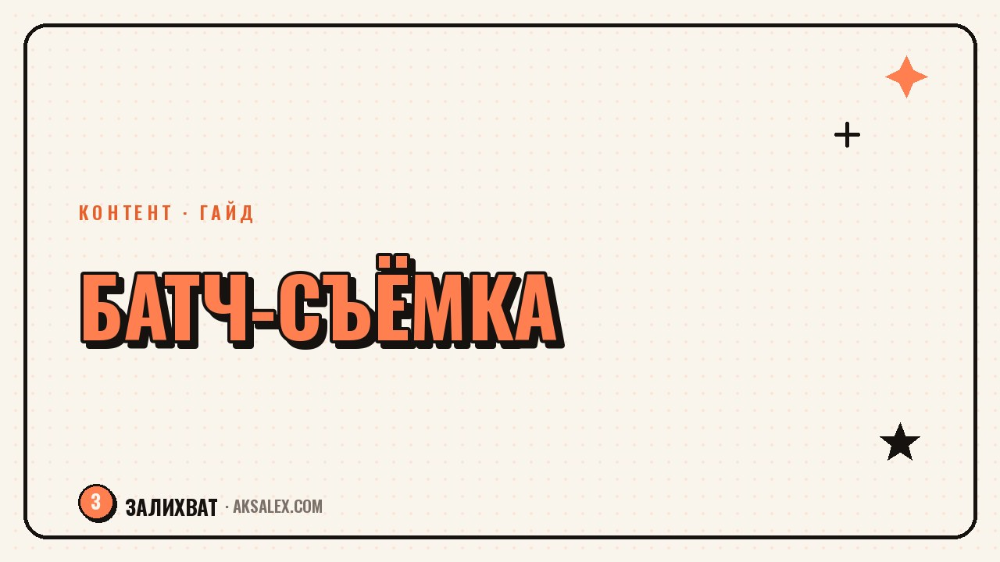

Батч-съёмка: как снять контент на неделю за раз

Батч-съёмка - это когда ты снимаешь не по одному ролику каждый день, а сразу пачку за один подход. Один раз собралась, навела свет, включила камеру - и закрыла контент на неделю, а то и на две. Это снимает главную боль блога: не нужно каждый день заставлять себя выходить в кадр. Разберём по шагам, как подготовиться, сколько роликов реально снять за раз и на чём чаще всего спотыкаются новички.
Почему батч экономит не часы, а нервы
Каждый выход в кадр стоит дорого не столько по времени, сколько по внутреннему настрою. Надо переодеться, накраситься, поймать состояние, поставить свет, а потом ещё вернуть всё на место. Когда ты делаешь это ради одного ролика, львиная доля усилий уходит не на съёмку, а на подготовку и раскачку.
Батч убирает этот повтор. Ты один раз входишь в рабочий режим и снимаешь на нём пять-десять роликов подряд, пока рука набита и лицо в тонусе. По ощущениям третий ролик даётся легче первого, а пятый - почти на автопилоте. Именно поэтому те, кто перешёл на батч, перестают выгорать от ежедневной гонки.
Ты устаёшь не от съёмки, а от того, что начинаешь её заново каждый день. Батч оставляет один старт вместо семи.
Подготовка: без неё батч разваливается
Главная ошибка - сесть перед камерой и думать, о чём говорить. За экспромтом уходит вся экономия времени. Поэтому батч начинается за столом: ты заранее набрасываешь темы и хотя бы тезисный план каждого ролика. Не дословный текст, а опорные точки: хук, две-три мысли, вывод.
Что подготовить до съёмки
- Список тем на 7-10 роликов, сгруппированных по смыслу.
- Короткий план каждого ролика: первая фраза и три опорные мысли.
- Один-два образа одежды, чтобы ролики не выглядели снятыми в одну минуту.
- Заряженный телефон или камеру, чистый объектив и свободное место в памяти.
- Свет у окна днём или лампу вечером - ровный, без резких теней.
Планы удобно накидать с нейросетью: даёшь ей свою нишу и просишь 10 тем плюс тезисы к каждой. За пять минут получаешь каркас, который останется поправить под свой голос. Так подготовка перестаёт быть отдельным тяжёлым днём.
Сам съёмочный день по шагам
Выдели цельный отрезок времени, когда тебя не дёргают: пока ребёнок спит, рано утром или вечером. Поставь телефон, проверь кадр и звук на пробном дубле - и дальше двигайся по списку сверху вниз, не перескакивая.
Снимай каждый ролик в два-три дубля и сразу переходи к следующему. Не пересматривай запись между дублями - это выбивает из ритма и съедает время. Разбор оставь на потом. Меняй образ раз в три-четыре ролика: сменила кофту, распустила волосы, переставила камеру к другой стене - и лента уже не выглядит конвейером.
Порядок внутри дня
- Сначала самые энергозатратные ролики, пока есть силы и свежее лицо.
- Похожие по формату снимай подряд - меньше перестроек в голове.
- Ролики с одним образом группируй, чтобы не переодеваться туда-обратно.
- Оставь буфер на два-три запасных дубля на случай оговорок.
Сколько реально снять за один подход
Не гонись за рекордом. Лучше пять сильных роликов, чем десять вымученных, где к концу ты уже говоришь через силу. Ориентируйся на своё состояние: как только чувствуешь, что речь стала вялой, - стоп. Ниже таблица с реалистичными ориентирами под разный формат.
| Формат | За подход | Время на подход | Хватит на |
|---|---|---|---|
| Говорящая голова, 20-40 сек | 6-10 роликов | 1.5-2 часа | 1-2 недели |
| Ролик с текстом и б-роллом | 4-6 роликов | 2-2.5 часа | 1 неделя |
| Фото для постов | 20-30 кадров | 1 час | 2-3 недели |
| Сторис-заготовки | 10-15 штук | 40 минут | 1 неделя |
Отснятое сразу разложи по папкам с понятными названиями, чтобы потом не искать нужный дубль среди десятков файлов. Монтаж и публикацию тоже удобно делать пачкой в другой день - тогда съёмка и обработка не мешают друг другу.
Частые ошибки, из-за которых батч не взлетает
Первая - снимать без плана и надеяться на вдохновение. Вторая - гнаться за количеством и выложить десять слабых роликов. Третья - забыть менять образ и получить ленту, где видно, что всё снято за раз. Четвёртая - откладывать разбор материала и потом тонуть в неразобранных файлах.
- Нет плана - экспромт съедает всё сэкономленное время.
- Один образ на всю пачку - лента выглядит однообразно.
- Снимаешь на последнем издыхании - последние ролики тянут вниз.
- Не подписал файлы - на монтаже теряешь час на поиски.
Исправляется всё на этапе подготовки. Потрать полчаса на план и порядок файлов - и сам съёмочный день пройдёт спокойно, а на выходе будет контент, которым не стыдно кормить ленту неделю.
Частые вопросы
Как часто нужно устраивать батч-съёмку?
Обычно раз в неделю или раз в две недели. Ориентируйся на то, сколько роликов ты выкладываешь и сколько успеваешь снять за один комфортный подход без потери качества.
Не будет ли лента выглядеть однообразно?
Не будет, если менять образ и фон каждые три-четыре ролика и разносить публикации по дням. Зритель видит один ролик в ленте, а не всю пачку сразу.
Что делать, если за день не успеваю снять всё?
Это нормально. Сними столько, на сколько хватает свежести, а остальное перенеси. Пять живых роликов ценнее десяти вымученных, снятых на усталости.
Нужен ли для батча дорогой свет и техника?
Нет. Хватает дневного света у окна или одной лампы и телефона с чистым объективом. Стабильность и ровный звук важнее дорогой камеры.
Как не забыть, о чём каждый ролик?
Держи перед собой список тем с короткими тезисами и двигайся по нему сверху вниз. Тезисный план в заметках или на листе решает проблему потери мысли между дублями.
а не вручную